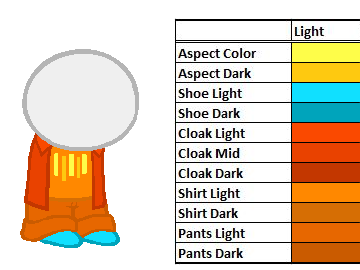

Want to Contribute???
Use the PARTS UPLOADER linked in a given dollset to test and add parts to it (pending human approval).
The Dollmaker has particular requirements if you want your sprites to work. View the existing parts (and palette and image size) for specific doll sets here
Colors

First and foremost: COLORS ARE VERY IMPORTANT. Do not use colors outside of this pallete unless you want them to be unreplaced.
Image Size
All KID/TROLL/CHERUB/SATYR parts are 400x300 pixels. YES even if it's something small like eyes. There will be a lot of empty space, this is normal. For any other doll set check the test page to get an idea of sizes.
Positioning
If you want something to be part of a layer, position it exactly where existing things are on that layer. Put your eyes where the eyes already are, for example.
Things like hair and fins LOOK like a single layer but are actually multiple. Part of the hair/fin goes on top of the face, part behind.
Here are example images for all layers. You can save these pictures and use them as guidelines for aligning parts.